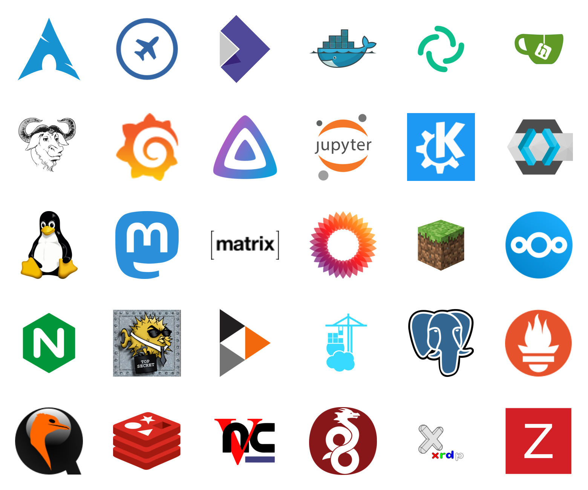
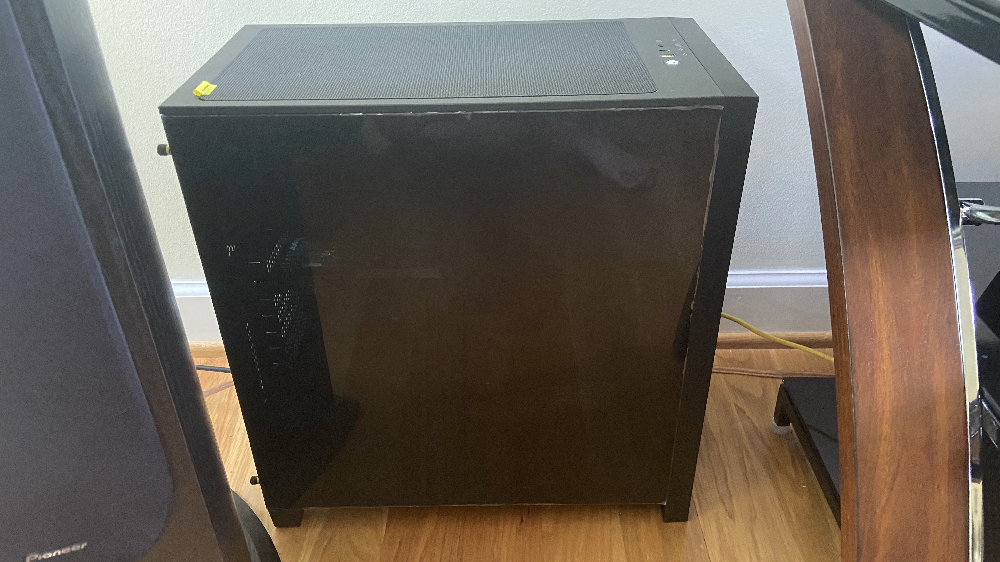

About
exozyme is a project to build a better, libre, privacy-respecting cloud and web-hosting community.
We provide over 30 free services, including SSH access, remote desktop, static site hosting, virtual machines, cloud storage, and more, ranging from Arch Linux to Zabbix! Check out our list of services for more.

Why exozyme?
It's free! exozyme is free as in beer and free as in speech.
High performance! Enjoy our unbeatable bare-metal performance! You can even run virtual machines and containers!
We respect your privacy! exozyme offers a number of decentralized, encrypted, and privacy-respecting alternatives to popular services.
We're flexible! Want to host a public Minecraft server? We can accomodate that. Need virtual machines? We have that. Just ask and we can probably make it happen!
We're a great communtity! Join our Matrix space and meet a community of people who love CS and Linux as much as you do!
If you're interested, get started with exozyme! Please take a look at the frequently unasked questions too.
Technical details
If you're interested in the technical details, the server uses a 6-core 12-thread AMD Ryzen 5 5600X proccessor paired with the 2011's finest ATI Radeon HD 6570 graphics card. We currently only have 16GB of RAM, but plenty of swap space so you don't have to worry about running out of memory. The server runs Arch Linux, updated every week on Saturday night, but you can use a virtual machine or container to run a different OS if you would like. Take a look at our roadmap for our future plans.

You can find all our source code at our Gitea. All HTML and CSS was hand-written with ❤️ by Ta180m.